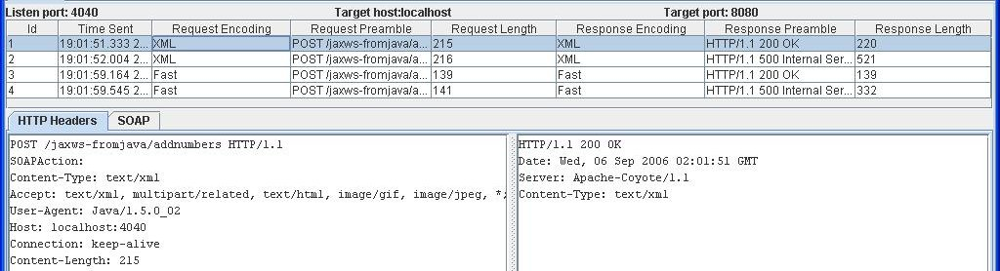
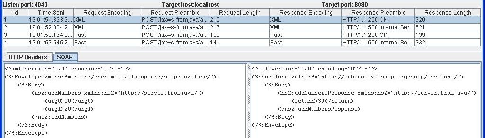
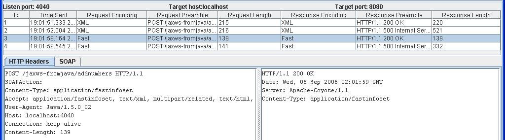
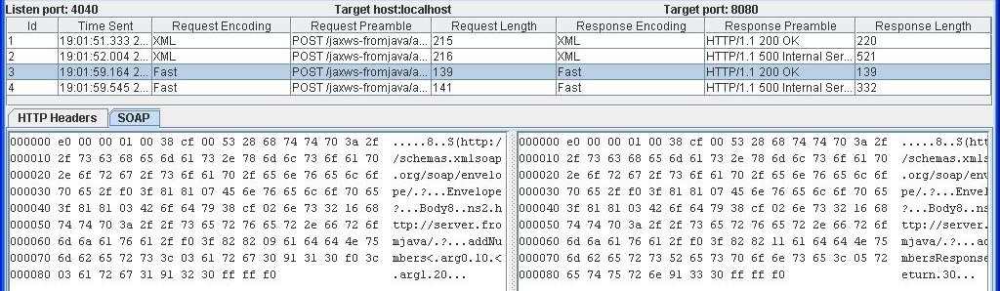

This page contains wsmonitor console dumps showing HTTP headers and request/response messages using SOAP and Fast Infoset.

Fig 1: HTTP headers for SOAP/HTTP message exchange

Fig 2: Request/Response message using SOAP

Fig 3: HTTP headers for Fast Infoset message exchange

Fig 4: Request/Response messages using Fast Infoset